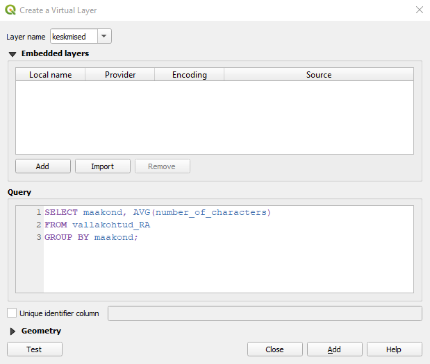
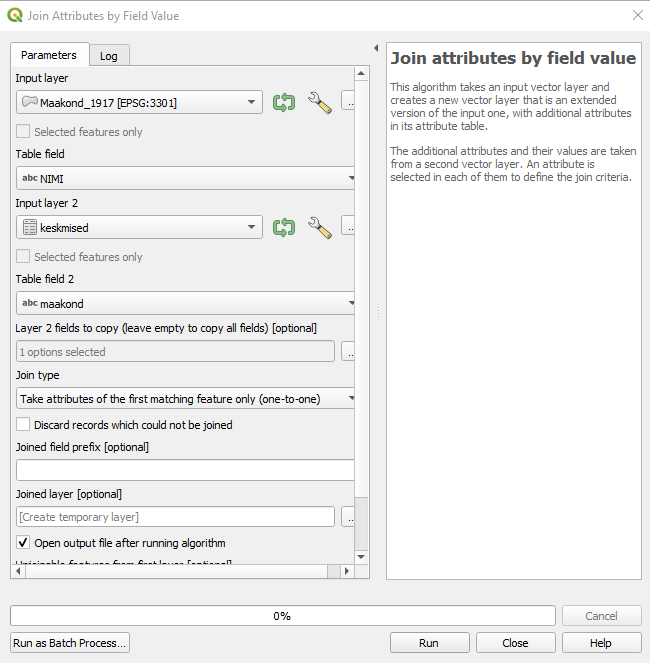

Praktikum 11 Andmekihtide ühendamine
11.1 Andmestike ühendamine
Kui meil on olemas andmestik, milles ruumilist infot väljendavad ainult mingid tekstilised tunnused (nt riikide, maakondade, linnade, talude vm nimed), saame nende konkreetsete asukohtade määramiseks, kaardil kuvamiseks ning ruumiliseks analüüsimiseks kasutada ära vabalt kättesaadavaid ruumiandmeid (nt Maa-ameti ruumiandmeid).
Vaatame esmalt varasemast oluliselt suuremat 19. sajandi vallakohtute andmestikku. See on osa Rahvusarhiivi ühisloomeprojektist, mille käigus on praeguseks sisestatud üle 40 000 vallakohtuprotokolli, kus arutatakse muuhulgas näiteks laenusid ja võlanõudeid, varavastaseid kuritegusid, pärimisasju, kahjutasunõudeid, aga ka näiteks sõimu ja vägivalda ning muid üleastumisi. Siin praktikumis kasutatavas andmestikus on umbes 25 000 protokolli andmed.
Tabel näeb välja selline:
## id year month day protocol_number
## 1 399 1885 7 19 159
## 2 182 1823 5 19 NULL
## 3 508 1856 2 17 4
## 4 249 1869 3 11 66
## 5 533 1843 3 27 NULL
## 6 583 1899 7 2 2
## X_record_type
## 1 Maade ja hoonete rentimine, mõõtmine ja pärandamine. Ehitamine. Suhted mõisa ja kroonuga.
## 2 NULL
## 3 NULL
## 4 Laenud ja võlanõuded
## 5 Perekonna- ja pärimisasjad
## 6 Varalised tehingud; Maade ja hoonete rentimine, mõõtmine ja pärandamine. Ehitamine. Suhted mõisa ja kroonuga.
## maakond kihelkond vald number_of_characters
## 1 Pärnu Halliste Penuja 409
## 2 Viljandi Helme Lõve 84
## 3 Tartu Kodavere Alatskivi 211
## 4 Viljandi Helme Lõve 60
## 5 Viljandi Paistu Holstre 348
## 6 Harju Kose Palvere 4025Selleks, et protokollide andmeid kaardil kuvada, peame maakondade, valdade või kihelkondade nimede abil ühendama tabeli mingite ruumiandmetega. Kasutame siin kõige suuremat üldistuse astet ja kasutame ühendamiseks maakondi.
Esmalt laadime aga andmestiku QGISi: Layer -> Add Layer -> Add Delimited Text Layer -> [vali fail vallakohtud_RA.csv] -> tulpade eraldaja on tabulaator (Tab), linnuke on kastide ees First record has field names ja Detect field types, Geometry Definition on No geometry -> Add -> Close.
Mitu eri maakonda andmestikus kokku on?
Tuleb meeles pidada, et tegemist on põhiliselt 19. sajandi andmetega. Seega ei ühti vallakohtuprotokollide maakonnanimed tänapäevaste maakondadega ning peame kasutama ühendamiseks Maa-ameti ajaloolise haldusjaotuse andmeid.
Figure 11.1: Maakondade piirid 19. ja 21. sajandil (allikas: Maa-amet)
Laadi alla Maa-ameti ajaloolise haldusjaotuse 1917. aasta maakondade polügoonid ja ava need QGISis.
Kontrolli, kas vallakohtute ja Maa-ameti maakondade nimed klapivad!
11.1.1 Lisaülesanne
Maa-ameti ajalooliste maakondade kaardil puudub Võrtsjärv. Selleks, et see sinna lisada, on vaja teha järgmised sammud.
- Kontrolli, kas 1917. aasta maakondade kihiga on probleeme:
- Tee kiht aktiivseks ja vali menüüst Processing -> Toolbox -> Vector geometry -> Check validity. Input layer on Maakond_1917, muud sätted jäta nii, nagu need vaikimisi on. Vajuta Run ja Close.
- Kui kihiga on mingeid probleeme, on probleemsed osad eraldi kihil nimega Invalid output. Kiht Error output näitab punktidega ära kohad, mis probleeme põhjustavad.
- Kihi parandamiseks vali jälle Maakond_1917 ning Processing -> Toolbox -> Vector geometry -> Fix geometries. Input layer on Maakond_1917, Fixed geometries alt vali Save to File, vali õige koht, kuhu parandatud kihti salvestada, salvesta fail nt nimega Maakond_1917_fixed, vajuta Save, Run ja Close. Tekib kiht Maakond_1917_fixed.
- Tee kiht aktiivseks ja vali menüüst Processing -> Toolbox -> Vector geometry -> Check validity. Input layer on Maakond_1917, muud sätted jäta nii, nagu need vaikimisi on. Vajuta Run ja Close.
- Vali maakondade vektorkihile aluskaart, kus oleks Võrtsjärv peale märgitud. Aseta see maakondade kihi alla ning maakondade kiht tee piisavalt läbipaistvaks, et aluskaart näha oleks.
- Tee uus kiht nimega vortsjarv: Layer -> Create layer -> New GeoPackage Layer. Geometry type olgu Polygon, CRS olgu EPSG:3301. Tee kiht aktiivseks, vajuta kihi muutmiseks kollasel pliiatsil, vali tööriist Add Polygon Feature ja digiteeri aluskaardilt Võrtsjärve polügoon. Salvesta ja vajuta muutmine pliiatsist kinni.
- Vali menüüst Vector -> Geoprocessing Tools -> Difference. Input layer olgu (parandatud) maakondade vektorkiht ning Overlay layer loodud Võrtsjärve kiht. Difference alt vali Save to File ja salvesta kiht nt nimega Maakond_1917_fixed_Vorts. Vajuta Run ja Close.
Figure 11.2: Lisatud Võrtsjärv
- Kustuta vanad maakondade kihid ja Võrtsjärve kiht ning nimeta Maakond_1917_fixed_Vorts ümber nimega Maakond_1917.
Andmete ühendamiseks on kolm viisi.
- Esiteks võime ühendada csv-tabeli shapefile’iga. Sellisel juhul säilib shapefile’i struktuur, milles on 9 rida (iga maakonna kohta üks) ning csv-failist lisatakse igale reale ainult mingid keskmised näitajad. Võime siin näiteks ühendada shapefile’iga iga maakonna protokollide keskmise pikkuse tähemärkides.
- Teiseks võime ühendada shapefile’i ruumiinfo csv-tabeliga. Sellisel juhul säilib csv-faili struktuur, milles on üle 25 000 rea (iga protokolli kohta üks) ning iga rida saab juurde koordinaadid. Võime siin näiteks ühendada csv-failiga iga maakonna keskpunkti (tsentroidi) koordinaadid.
- Kolmandaks võime ühendada shapefile’i ruumiinfo csv-tabeliga nii, et säilitame shapefile’i vektorandmete struktuuri, aga ühtlasi saame lisada ruumiinfo eraldi ka kõikidele tuhandetele ridadele.
11.1.2 CSV info ühendamine SHP-ga
- Esmalt on meil vaja pikast, paarikümne tuhande kirjega CSV-tabelist saada tabel, kus oleks iga maakonna kohta selle maakonna kõikide protokollide keskmine pikkus tähemärkides. Selleks saame luua näiteks uue virtuaalse kihi ning kasutada SQL-i päringut. Mine Layer -> Create Layer -> New Virtual Layer, nimeta kiht nt keskmised ning sisesta Query väljale pildil näidatud SQL-i päring ning vajuta Add.
Figure 11.3: Virtuaalse kihi loomine
- Sama asja saab teha ka nt Database -> DB Manager -> SQL Window -> päring
SELECT maakond, AVG(number_of_characters) FROM vallakohtud_RA GROUP BY maakond;-> Execute -> Load as new layer -> Load.
- Põhimõtteliselt saab info kätte ka nii: Processing -> Toolbox -> Vector analysis -> Statistics by categories. See loob uue kihi Statistics by category, mis annab ülevaate mingist tunnusest (nt tähemärkide arv) teise tunnuse (maakondade) põhjal grupeerituna. Väljundi tulbas mean on keskmine tähemärkide arv iga maakonna kohta.
- Sama asja saab teha ka nt Database -> DB Manager -> SQL Window -> päring
- Nüüd saame ühendada kihi keskmised ja (parandatud) ajalooliste maakonnapiiride kihi. Selleks saab nt kasutada sakki Joins, mida oleme juba ka varem kasutanud.
- Teine viis kihte ühendada on valida Processing -> Toolbox -> Vector general -> Join attributes by field value. See tekitab uue kihi, vaikimisi nimega Joined layer, kus ei ole olemasolevat ja lisatud infot enam eristatud.
Figure 11.4: Andmestike ühendamine Processing tools’iga
- Teine viis kihte ühendada on valida Processing -> Toolbox -> Vector general -> Join attributes by field value. See tekitab uue kihi, vaikimisi nimega Joined layer, kus ei ole olemasolevat ja lisatud infot enam eristatud.
- Nüüd on meil maakonnapiiride kiht, mille atribuuttabelis on ka infot selle kohta, kui pikad vastava maakonna vallakohtuprotokollid keskmiselt on. Kasuta seda tulpa selleks, et värvida maakonnad eri tooni (pikemate protokollidega maakonnad tumedamalt, lühematega heledamalt). Selleks kasuta juba eelmistes praktikumides näidatud viise (Symbology -> Graduated jne).

Figure 11.5: Ühendatud andmestikud
11.1.3 SHP info ühendamine CSV-ga
- Proovime nüüd ruumiinfot salvestada CSV-kihti nii, et koordinaadid oleksid tabelis atribuutidena eraldi tulpades.
- Ühendame vallakohtuprotokollide csv-failiga iga maakonna keskpunkti (tsentroidi) koordinaadid, nt selleks, et protokolle kaardil kuvada. Selleks tuleb meil esmalt leida maakondade polügoonide keskpunktid.
- Tee kiht Maakond_1917 aktiivseks -> Vector -> Geometry Tools -> Centroids… -> jäta vaikeväärtused ning vajuta Run. Maakondade kihile ilmuvad nüüd uuel kihil polügoonide keskpunktid.
Figure 11.6: Polügoonide keskpunktide leidmine
- Järgmiseks lisame tekkinud kihi Centroids atribuuttabelisse punktide x- ja y-koordinaadid: tee kiht aktiivseks -> Vector -> Geometry Tools -> Add Geometry Attributes, jäta jällegi vaikeväärtused ning vajuta Run ja Close. Tekkis uus kiht Added geom info. Nimetame selle ümber nt koord_keskpunktid.
- Ühendame nüüd CSV-kihi maakondade nimede järgi keskpunktide koordinaatide kihiga. Üks võimalus on teha jälle paremklikk kihil vallakohtud_RA -> Properties -> Joins -> Add new join. Teine võimalus on kasutada hoopis Processing -> Toolbox -> Vector general -> Join attributes by field value, ent jälgi, et sel juhul oleks Join type’iks seekord valitud one-to-many, mis jätab alles kõik vallakohtute andmestiku read.
Figure 11.7: Andmestike ühendamine (2)
- Võiksime nüüd loodud (üle 25 000 reaga ja koordinaatidega) kihi salvestada uue csv-failina ning salvestatud faili uuesti geoinfoga varustatud csv-failina sisse lugeda. Selle asemel aga võib kasutada ka Processing -> Toolbox -> Vector creation -> Create points layer from table.
Figure 11.8: Koordinaatidega csv-faili muutmine punktikihiks
- Nüüd on meil kaardil üksteise all igas maakonnas sadu ja tuhandeid punkte, ehkki vaikimisi näeme, et igas maakonnas on ainult üks punkt. Selleks, et protokollide jaotumist visuaalselt veidi paremini näidata, võime näiteks filtreerida välja ainult protokollid, mille teemaks on (ainult) “Sõim ja vägivald” ning teha heatmap’i.
Figure 11.9: Heatmap
11.1.4 CSV ja SHP ühendamine polügoonidega vektorandmeteks
Kolmas viis, mis jätab alles nii kõik CSV-andmestiku vaatlused (ühest kohast mitu vaatlust), ent võimaldab ühendatud andmestikku hoida polügoonidega vektorformaadis (mitte lihtsalt tabelina, milles punktide koordinaadid on atribuudid), saame kasutada sedasama ülal mainitud Join type = one-to-many võimalust. NB! Kuna tekitame sisuliselt üle 25 000 polügooni, võib protsess võtta palju aega.
- Vali uuesti Processing -> Toolbox -> Vector general -> Join attributes by field value.
Figure 11.10: CSV ja SHP ühendamine vektorandmeteks
- Tekib uus kiht Joined layer, milles iga vallakohtuprotokoll on geograafiliselt seotud mõne Eesti maakonna polügooniga.
Võid proovida teha sama kihelkondade andmetega.
11.2 Geokodeerimine
Täpsemate asukohtade määramiseks (nt aadresside jaoks) saab kasutada geokodeerimise teenust. Geokodeerimine on aadressi või kohanime seostamine geograafiliste koordinaatidega. Tagurpidi geokodeerimine omakorda võimaldab koordinaatidest tuletada aadressid ja kohanimed.
Maa-amet pakub tasuta geokodeerimise teenust. Sealjuures on võimalik geokodeerida ainult üht aadressi/kohta korraga kui ka tervet hulka andmeid (massgeokodeerimine).
Geokodeeri alustuseks näiteks enda, oma sõbra, vanemate vt aadress. Saad väljundit kuvada nii aadressiobjektide kaardirakenduses kui ka erinevates formaatides alla laadida. Kas jääd tulemuse täpsusega rahule?
Massgeokodeerimise sisendiks sobivad CSV-, XLS- või XLSX-formaadis andmetabelid. CSV-formaadi puhul peab välju eraldama semikoolon. Vaatame seda lühikese näite abil, kus geokodeerime Tartu Ülikooli valdkondade ametlikud aadressid.
- Kodeerimisel pead ära määrama, millises tulbas paikneb lähteaadress, mida geokodeerima hakatakse. Antud juhul on selleks tulp Aadress.
- Seejärel saad valida,
- kas tahad aadresse lihtsalt normaliseerida (st viia kujule, milles need esinevad nt kohanimeregistris), ilma et saaksid aadressidele koordinaadid;
- milliste objektide hulgast vasteid otsitakse. Meid huvitavad siin eeskätt õppehooned, aga veidi ebatäpsemate aadresside puhul (talud, tänavad, maakonnad, linnad jne) tasub otsida ka teiste objektide seast;
- kas tahad, et andmeid töödeldaks sünkroonselt, mispuhul saad protsessi jälgida kohe samas veebilehitseja aknas, või asünkroonselt, mispuhul andmed laetakse serverisse ning kasutajale saadetakse mõne aja pärast tulemus meilile. Viimast tasub teha eeskätt siis, kui andmestik on mahukas.
- milliseid ruumiandmete tulpasid väljundisse soovid (nt kas kõiki aadressiobjektide id-sid ja tasemeid);
- kuidas vasteid esitatakse. Eeskätt puudutab see aadresse, millel on kas mitu vastet või millele täpset vastet ei leita.

Figure 11.11: Massgeokodeerimine
Geokodeerimine töötab väga hästi tänapäevaste aadressidega.
Vaatame aga nüüd ka natuke vanemaid andmeid, nimelt Rahvusarhiivi kaudu kasutatavat Tartu Ülikooli ja Eesti Ajalooarhiivi andmebaasi “Album Academicum 1918–1944”, mis koondab matrikliraamatutele jt allikatele tuginedes infot Tartu Ülikooli immatrikuleeritud üliõpilastest aastatel 1918-1944 (vaata lähemalt). Kuna andmestik ise on üpris mahukas, sisaldades infot enam kui 20 000 tudengi kohta, siis vaatame siin ainult kahe väga levinud perekonnanimega (Tamm ja Saar) üliõpilaste andmeid ning võrdleme nende perekonnanimedega üliõpilaste päritolu. Naisüliõpilaste andmete puhul ei pruugi võrdlus olla väga täpne, kuna andmestikus sisalduvad ka need kirjed, kus Tamm või Saar on saadud perekonnanimeks abiellumisel.
Oleme veidi algandmestikku täiendanud ning lisanud standardiseeritud sünnikoha tulba, kus andmebaasis kajastatud sünnikohtadel on lühendid lahti kirjutatud ning erinevate tasemete vahele on lisatud komad.
## Matrikli.Nr. Eesnimi Perenimi Isanimi Isa.tegevusala
## 1 120 Alide Tamm Jakob põllumees
## 2 129 Alexander (Aleksander) Tamm Jaan Puudub
## 3 172 Andres Tamm Hans põllumees
## 4 207 Ann Tamm Jaan metsavaht
## 5 407 Alfred Tamm Jaan majaomanik
## 6 513 Ado (Avdei) Tamm Juhan mõisateenija
## Sünniaeg Sünnikoht Sünnikoht_std Surm Surmakoht
## 1 20.01.1897 Võ Vana-Roosa v Võrumaa, Vana-Roosa vald Puudub Puudub
## 2 20.11.1896 Põltsamaa Põltsamaa 1933 Puudub
## 3 22.09.1895 Vil Tarvastu v Viljandimaa, Tarvastu vald Apr.1926 Puudub
## 4 22.12.1890 Pä Karksi v Pärnumaa, Karksi vald surnud Eesti
## 5 10.12.1900 Valga Valga 12.07.1963 Tln
## 6 19.05.1893 Tartu Tartu surnud Vn
## Kool
## 1 Valga G 16
## 2 TÜ apt abil 21
## 3 Tartu RK 17
## 4 Pärnu TG 10
## 5 Tartu RK 18
## 6 Tartu Al-dri G 13
## Eriala
## 1 med 19-24-, filos 24-26-
## 2 farm k 24-29*
## 3 jur 17-, lood 17-, med 17-18-, med 19-23*
## 4 filos 19-24-
## 5 keem 18-, keem 19-24-, jur 24-25-, New Yorgi Columbia Ü ajakirjandus 29..33*
## 6 mat 13-17-, mat 20..24*, kaub 24..27-
## Akadeem..org. Teaduskraadide.omandamiseks.kaitstud.tööde.pealkirjad
## 1 Puudub Puudub
## 2 Fraternitas Liviensis Puudub
## 3 Ugala Puudub
## 4 EÜS Veljesto Puudub
## 5 Ugala Puudub
## 6 EÜS Puudub
## Elulugu
## 1 Puudub
## 2 Puudub
## 3 Puudub
## 4 11-13 Võiera (Uue-Vändra v) algk, 13-16 Pärnu Eesti Kooliseltsi progümn-i õp, 16-18 tunniandja Pärnus. 18-19 Vahi põllutöökooli, 19-20 Tartu ÕSi, 20-21 Tartu Linna PRG, 22-30 Tartu linna õhtualgk õp. 22-45 TÜ filosoofiateaduskonna seminariraamatukogu korraldaja. 45 arret Tartus, 47 asumisel Salehardis, 50 vabanes, Eestis tagasi.
## 5 18-20 Vabadussõjas. 20 Tartu linnaraamatukogu ametnik. 25-35 elas USAs, kuukirja Meie Tee asutajaid ja toimetuse liige, tegi kaastööd Päevalehele ja ajakirjale Olion, 29 Estonian Bulletini toim. A-st 35 Eesti Kultuurkapitali kujutava kunsti sihtkapitali valitsuse sekretär ja ajakirja Välis-Eesti toim. Saksa okupatsiooni ajal ajalehe Eesti Sõna toimetuse liige. 49 küüditati Sõmeru vallast Krasnojarski kraisse, 57 Eestis tagasi.
## 6 17-20 Tartu linnavalitsuse ametnik, 22 opteerimiskomisjoni sekretär Moskvas. 22-32 kaubamaja K. Holst & Ko ärijuht, 32-40 Shell Company of Estonia Ltd Tartu bensiinijaama juh. 41 arret, suri vangistuses.
## pk
## 1 Tamm
## 2 Tamm
## 3 Tamm
## 4 Tamm
## 5 Tamm
## 6 TammPõhimõtteliselt võib proovida ka praktikumis tabelit tamm_saar_koond2.csv massgeokodeerimisse saata, ent kui teeme seda kõik koos, võib server saada üle koormatud. Seepärast oleme lisanud praktikumi materjalidesse ka juba geokodeeritud SHP-faili kaustas RA_geokodeeritud.

Figure 11.12: Massgeokodeerimine (RA)
Ülesanne
Laadi geokodeeritud andmestiku shapefile vektorkihina QGISi (NB! Arvesta kodeeringut valides, et tegemist on Maa-ameti failiga);
vali andmetele sobiv aluskaart;
värvi punktid selle järgi, kas tegemist on Tamme- või Saare-nimeliste üliõpilastega (tulp pk). Võid kasutada ka erinevaid sümboleid;
vii punktide läbipaistvus 30% peale.
Figure 11.13: Tamme- ja Saare-nimeliste üliõpilaste sünnikohad Album Academicumis
Vaatame nüüd ka atribuuttabelit.
Kuna tegemist on ajaloolise andmebaasiga, on paljud kohanimed vahepeal muutunud. Vaatame geokodeeritud tabelit ning püüame välja selgitada, milliste kohtadega on geokodeerijal probleeme olnud. Eeskätt aitab selle puhul puuduvate aadresside ridade tuvastamine ning sisend- ja täisaadressi tulpade võrdlus.
Milliseid probleeme märkad?
Maa-ameti geokodeerimise teenus ei ole mõeldud ajalooliste andmete jaoks. Seega töötaks Album Academicumi puhul paremini ehk nt ajalooliste valdade või mõisate andmed.
11.3 Ruumiandmete omavahel ühendamine
Siiamaani vaatasime andmeid, kus ainult üks andmekihtidest sisaldab ka ruumiandmeid. Kui meil on näiteks aga kaks vektorkihti, mis mõlemad sisaldavad ka ruumiandmeid, saame ühendada andmeid ka ilma ühise atribuudita, koordinaatide põhjal.
- Ühendame näiteks maakondade shapefile’i ja geokodeeritud Tamme-Saare andmestiku. Selleks valime Processing -> Toolbox -> Vector general -> Join attributes by location. Kasutame selleks geomeetrilist predikaati contains, sest tahame teada, millised punktid jäävad iga maakonna polügooni sisse (võivad ka polügooni sisemise piiriga külgneda) ja teame, et kõik punktid jäävad Eesti riigi maakondade piiridesse. Samuti võime igaks juhuks märkida meetodina ära intersects, juhuks kui mõni punkt asub täpselt maakondade polügoonide piiril. Kasutame ühendamistüübina one-to-many, et iga maakonna iga punkt (mitte ainult esimene) ühendataks vastava polügooniga.
- equals - kahel objektil täpselt samad koordinaadid
- intersects - kaks objekti katavad vähemalt mingeid ühiseid koordinaate
- crosses - kaks objekti lõikuvad nii, et objekte jääb ristumiskohast mõlemale poole
- overlap - kaks samade dimensioonidega objekti katavad mingeid ühiseid koordinaate, aga ei ole täpselt ühesugused ja kohakuti
- touches - kaks objekti puutuvad kokku ainult servadest, aga objektide siseosa ei kattu
- within - esimene objekt tervenisti teise sees
- contains - teine objekt tervenisti esimese sees
- Vaata lähemalt nt siit.
Figure 11.14: Ruumiandmete kihtide ühendamine
- Nii saame nüüd punktide asemel kasutada analüüsil ja visualiseerimisel polügoone.
- Kui näiteks soovime näidata, kui palju mingitest maakondadest Tamme- ja Saare-nimelisi üliõpilasi oli immatrikuleeritud, saame leida esmalt, kui palju andmepunkte mingisse maakonda jääb, ning seejärel värvida maakondade polügoonid vastavalt punktide arvule. Selleks võib teha uue kihi, kus oleme kokku lugenud iga maakonna piiridesse jäävad punktid, aga seda võib teha ka olemasoleva kihiga graduated sümboloogias avaldise
count("Matrikli_N", group_by:="NIMI")abil. Selles avaldises määrame, et polügoonid tuleks värvida vastavalt sellele, kui palju unikaalseid matriklinumbreid igas maakonnas esineb. Eeldame siinjuures, et igal üliõpilasel oli oma matriklinumber ja seega unikaalsete matriklinumbrite arv kattub üliõpilaste arvuga.
Figure 11.15: ‘count’-funktsioon avaldistes
- Samuti võime teha eraldi joonised Tamme- ja Saare-nimelistele üliõpilastele, kasutades count-funktsioonis argumenti filter.
Figure 11.16: ‘count’-funktsioon avaldistes koos filtri argumendiga
- Kui tahame näha ka, kui palju ikkagi mingist maakonnast punkte on, siis saame kasutada Processing -> Toolbox -> Vector general -> Join attributes by location (summary), mis laseb teha uue kihi, mis kajastab mitte enam üksikuid andmepunkte, vaid nende põhjalt tehtud erinevaid statistilisi näitajaid (nt maakondadesse jäävate punktide koguarv, maakondade üliõpilaste kõige varasem ja hilisem sünniaeg jne). Valime näiteks tabelist tunnused
Matrikli_NjaSunniaegning leiame nende kohta näitajad count, min ja max.
Figure 11.17: Tööriist ‘Join attributes by location (summary)’
- Lõpuks on võimalik punkte polügoonides leida ka nii, et valime Processing -> Toolbox -> Vector analysis -> Count points in polygon, mis teeb uue kihi, kus polügoonide tabelile on lisatud lihtsalt uus tulp vastavasse maakonda jäävate punktide arvuga.
Figure 11.18: Punktide kokkulugemine polügoonides
11.4 Ruumiandmete käsitsi lisamine
Alati ei anna automatiseeritud lahendused ja olemasolevad ruumiandmed piisavalt kvaliteetset tulemust. Sellisel juhul (näiteks ajalooliste andmestike puhul) tasub kasutada kohanimeandmebaase ja ajaloolisi kaarte aluskaartidena.
Vaatame näiteks Hageri vallakohtu protokolli aastast 1890. Protokollis on ära märgendatud ka nimeüksused, ent need ei ole tänapäevases kirjaviisis. Nimed sisalduvad failis Harju_Hageri_Kohila_id4010_1890a_nimed.csv olevas tabelis, ent võid võrdluseks kõrvale võtta lahti ka terve protokolli teksti (vastav txt-fail).
Impordi andmed csv-failina QGISi (NB! tabelil ei ole tulbanimesid).
Filtreeri andmestikust välja ainult kohanimed (KO_koht).
Lisa Maa-ameti WMS/WMTS teenuse kaudu ajalooliste kaartide hulgast Schmiti-Rückeri aluskaart (XIX saj./1884), soovi korral ka mingi tänapäevane kaart.
Leia kaardilt võimalikult palju CSV-tabeli kohanimedest ning tee uus kiht, kuhu märgid vastavatesse kohtadesse punktid (Layer -> Create Layer -> New shapefile layer). Punktide märkimiseks tee loodud kiht aktiivseks ning vajuta kollasel pliiatsil, seejärel Add Point Feature.
Figure 11.19: 1890. aasta Hageri vallakohtuprotokollis mainitud kohanimed
Puuduvaid nimesid võid otsida ka näiteks kohanimeandmebaasist või Maa-ameti ajalooliste kaartide kaardirakendusest, mis võimaldab ka hõlpsat otsingut.
11.5 Järgmisel korral
Neljapäeval tegeleme visualiseerimisega (värvid, sildid, eksitamine kaartidel).